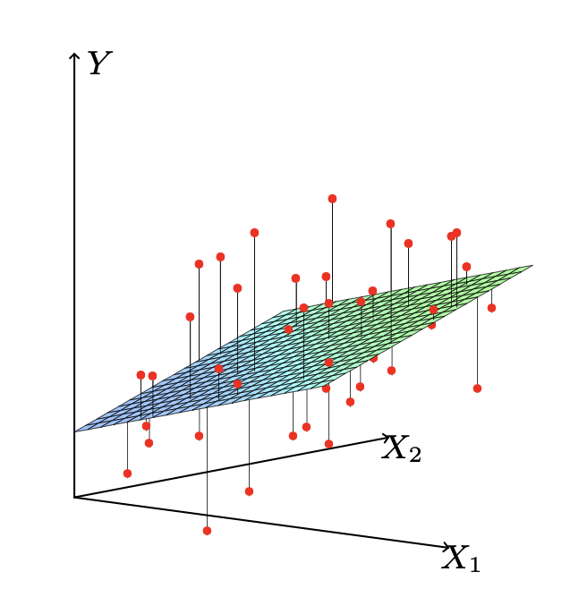
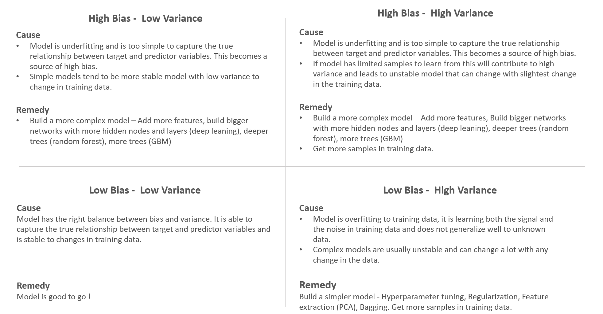
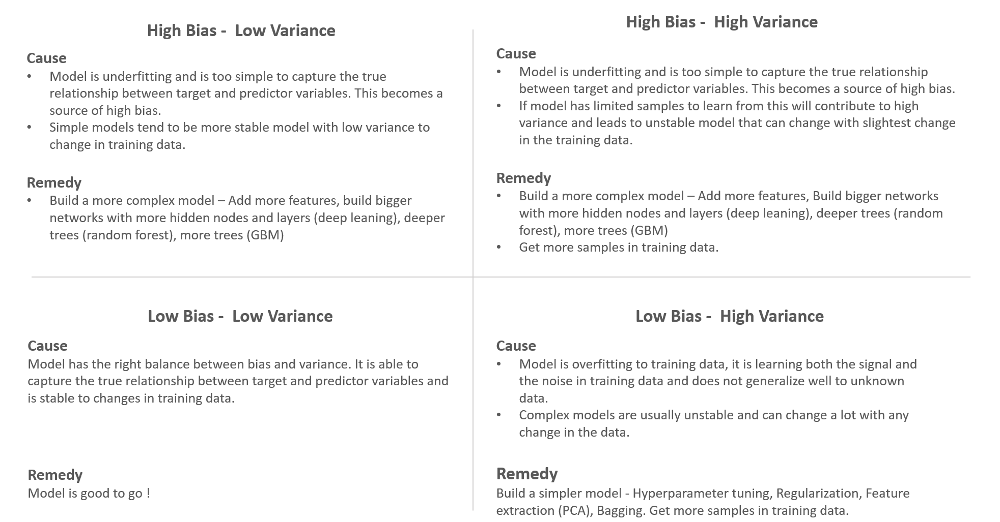
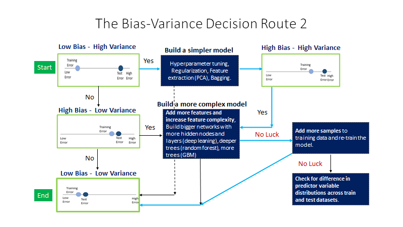
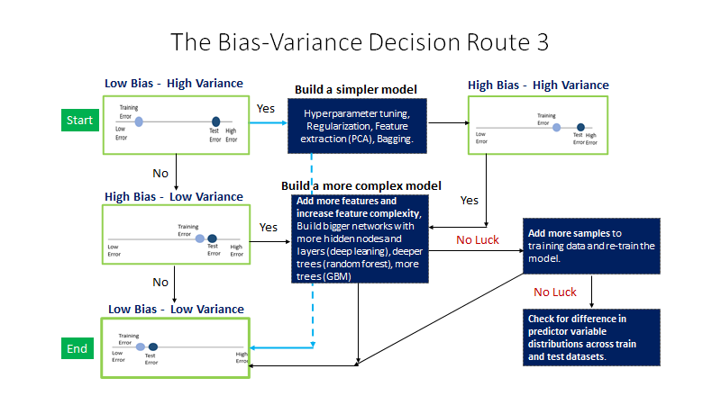
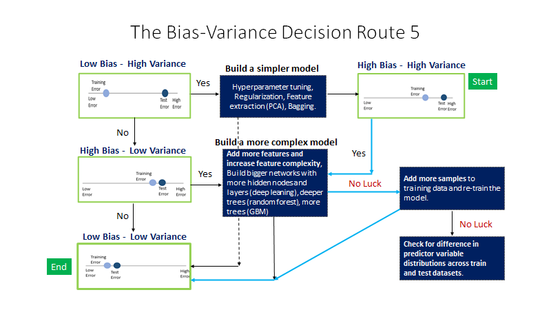
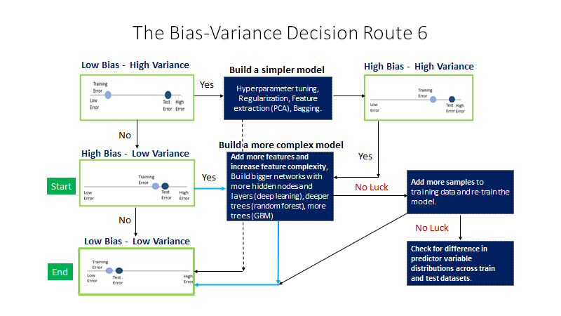

regression¶
linear¶
links¶
generalized flow¶
from sklearn.model_family import ModelAlgo
# create instance of that model
mymodel = ModelAlgo(param1, param2)
# train the model
mymodel.fit(X_train, y_train)
# get predictions
predictions = mymodel.predict(X_test)
# import some error metric function for performance evaluation
from sklearn.metrics import error_metric
performance = error_metric(y_test, predictions)
Ordinary Least Squares¶
minimize residual error
y = m.x + b -> with multiple features you need gradient descent to scale this m = slope of line (m=0 -> zero slope, + pos, - neg slope) b = cross w y-axis when x = 0 b = y-intercept
X = multiple features (x1, x2, x3..) y = vector label (eg Price)
ŷ (prediction) = bx + .. + bn xn (n = number of features in your dataset)
ŷ = b0 + b1.x
(the slope) b1 = Pearson Correlation Coefficient (x) Standard Deviation (y) / std dev (x)
b1 = P(x,y) . stdev(y) / stdev(x) b0 = y̅ - b1.x̅
example¶
calculate relation hours of operation (x) with estimated production volume (y)?
calculate averages = x̅, y̅
x y x-x̅ y-y̅ (x-x̅)(y-y̅) (x-x̅)²
34 102 -6 -32 192 36 b1 = 558/124 = 4.5
35 109 -5 -25 125 25 b0 = 134 - (4.5 x 40) = -46
39 137 -1 3 -3 1 y̅ = -46 + 4.5x
42 148 2 14 28 4
43 150 3 16 48 9
47 158 7 24 168 49
------------------------------------
x̅,y̅ 40 134 sum: 558 124
so if the manager wants to produce 125 units/week he should run the plant for: y̅ = b0 + b1.x 125 = -46 + 4.5x
with more than 1 feature this becomes unscalable so we shift focus on minimizing a cost function with gradient descent
gradient descent = minimization of cost function
n
y̅ = E Bi.Xi
i=0
sum of squared errors for M rows (the predictions)
J = cost function divide by m to get the mean
all rows (residual error ² (minimize squared error))
err between real y & predicted y̅
m |
J(B) = 1/2m . E . (y^j - y̅^j)² <----
j=1
gradient = omgekeerde driehoek
- X:
matrix X of all the features datapoints
- Y:
vector of all the known y labels
- B:
vector of beta coefficients to minimize the gradient descent aka derivative aka minim of cost function)
cost function calculation in python
prepend x vector with a vector of 1’s (multiplying matrices you need correct dimensions)
inner = np.power(((X @ theta.T) - y, 2)
x = 171/4.5 = 38 hours per week work needed
beta coefficients¶
using polyfit to calculate beta coefficients
np.polyfit¶
import pandas as pd
import numpy as np
import seaborn as sns
import matplotlib.pyplot as plt
import sklearn
df = pd.read_csv("data/Advertising.csv")
df['total_spend'] = df['TV'] + df['radio'] + df['newspaper']
# explore relationship with regplot
sns.regplot(data=df, x='total_spend', y='sales')
plt.show()
X = df['total_spend']
y = df['sales']
# calculate Ordinary Least Squares with polynomial fit (set degree to 1 for lin reg)
beta_coefficients = np.polyfit(X, y, deg=1)
# polyfit returns [0.04868788 4.24302822]
# vector to minimize gradient descent/cost function
beta1, beta0 = beta_coefficients[0], beta_coefficients[1]
potential_spend = np.linspace(0, 500, 100) # 100 points
predicted_sales = beta1 * potential_spend + beta0
cost functions (sum of errors² between estimate & true observation in lin regression)
plt.clf()
plt.plot(potential_spend, predicted_sales) # our lin regression line
sns.scatterplot(data=df, x='total_spend', y='sales')
plt.show()
ad_spend = 200
predicted_sale = beta1 * ad_spend + beta0
print(predicted_sale)
# for an ad spend of 200usd = 13.98060407984596 units
betas = np.polyfit(X, y, deg=3) # y = B3x³ + B2*x² + B1x + B0
b3, b2, b, y_intercept = betas[0], betas[1], betas[2], betas[3]
pot_spend = np.linspace(0, 500, 100)
pred_sales = b3 * pot_spend ** 3 + b2 * pot_spend ** 2 + b * pot_spend + y_intercept
plt.clf()
sns.scatterplot(data=df, x='total_spend', y='sales')
plt.plot(pot_spend, pred_sales) # our lin regression line
plt.show()
plt.clf()
sns.pairplot(df)
plt.show()
plt.clf()
fig, axes = plt.subplots(nrows=1, ncols=3, figsize=(16,6))
axes[0].plot(df['TV'], df['sales'], 'o')
axes[0].set_ylabel('Sales')
axes[0].set_title("TV Spend")
axes[1].plot(df['radio'], df['sales'], 'o')
axes[1].set_ylabel("Sales")
axes[1].set_title("Radio Spend")
axes[2].plot(df['newspaper'], df['sales'], 'o')
axes[2].set_ylabel("Sales")
axes[2].set_title("newspaper Spend")
plt.tight_layout()
plt.show()
train_test_split¶
# store features as X by just dropping the label|target "sales"
df = df.drop(['Unnamed: 0','total_spend'], axis=1)
X = df.drop("sales", axis=1)
y = df['sales']
from sklearn.model_selection import train_test_split
# help(train_test_split)
# train_test_split & shift + tab to get help in jupyter
# features test_size = data % left out that goes into test set
X_train, X_test, y_train, y_test = train_test_split(X, y, test_size=0.3, random_state=101)
# labels set a random seed
# shuffles perhaps already sorted data use same randomness if doing multiple ml algos
# it retains the index
# create the model aka estimator
from sklearn.linear_model import LinearRegression
# print(help(LinearRegression))
# default params typed out
model = LinearRegression(fit_intercept=True, normalize=False, copy_X=True, n_jobs=None)
model.fit(X_train, y_train) # returns model object: LinearRegression()
# print(len(X_train)) # 140
Note
regression is a task when a model attempts to predict continuous values (eg sales) unlike categorical values, which is classification (eg predict country given a house its features) there are no in between values for separate countries
Note
a RMSE for your label of 10€ is great for a house, not for a candy bar context is important compare your error metric to the average value of the label
X_test.head()
test_predictions = model.predict(X_test)
from sklearn.metrics import mean_absolute_error, mean_squared_error
print(df['sales'].mean()) # 14.0225
plt.clf()
sns.histplot(data=df, x='sales', bins=20)
plt.show()
# https://numpy.org/doc/stable/reference/generated/numpy.tril.html
plt.clf()
mask = np.tril(df.corr())
sns.heatmap(df.corr(), fmt=".1g", annot=True, cmap="cool", mask=mask)
plt.show()
error metrics¶
# mean absolute error
print(mean_absolute_error(y_test, test_predictions)) # 1.213745773614481
# RSME (if big diff with MAE = you've got a few data points that are way off)
print(np.sqrt(mean_squared_error(y_test, test_predictions))) # 1.5161519375993884
coefs_df = pd.DataFrame(model.coef_, X.columns, columns=['coefficient'])
# X.columns = Index(['TV', 'radio', 'newspaper'], dtype='object')
"""
coefficient
TV -0.012834
radio 0.129096
newspaper -0.058561
"""
print(model.intercept_) # 3.1515267680706547
# with a budget of 50 for TV 30 for Radio & 10 for Newspaper, sales will be:
budget = [50, 30, 10]
test_sales = model.intercept_ + sum(budget * model.coef_)
print(test_sales) # 11.01006995548518
evaluate residuals¶
# evaluate residuals (y-ŷ)
# residual plot showing a clear pattern = lin regression not valid
test_residuals = y_test - test_predictions
plt.clf()
sns.scatterplot(x=y_test, y=test_residuals)
plt.axhline(y=0, color='r', ls='--') # make sure there's no clear line or curve
# distribution plot
sns.displot(test_residuals, bins=25, kde=True)
plt.show()
# probability plot
import scipy as sp
fig, ax = plt.subplots(figsize=(6,8), dpi=100)
_ = sp.stats.probplot(test_residuals, plot=ax) # _ is convention for a throwaway variable
plt.show()
deploying model¶
# loading & saving the model
final_model = LinearRegression()
final_model.fit(X, y) # full dataset
# save model
from joblib import dump, load
dump(final_model, "final_sales_model.joblib")
# load model
loaded_model = load("final_sales_model.joblib")
interpreting coefs¶
# interpreting the coefficients
# beta coefs tv radio newspaper
print(final_model.coef_)
[ 0.04576465 0.18853002 -0.00103749]
0 when your spend has no effect on sales
for every 1 unit TV feature so eg 231.1 (x1000usd) we expect a sales increase of 0.0457 units
for every 1000$ spend on radio ads we expect 188 more units sold
looks like we should drop radio feature
# plotting true points vs predicted points
y_hat = final_model.predict(X)
plt.clf()
fig, axes = plt.subplots(nrows=1, ncols=3, figsize=(16,6))
axes[0].plot(df['TV'], df['sales'], 'o') # True
axes[0].plot(df['TV'], y_hat,'o', color='red') # predicted
axes[0].set_ylabel("Sales")
axes[0].set_title("TV Spend")
axes[1].plot(df['radio'], df['sales'], 'o')
axes[1].plot(df['radio'], y_hat, 'o', color='red')
axes[1].set_ylabel("Sales")
axes[1].set_title("Radio Spend")
axes[2].plot(df['newspaper'], df['sales'], 'o')
axes[2].plot(df['newspaper'], y_hat, 'o', color='red')
axes[2].set_ylabel("Sales")
axes[2].set_title("Newspaper Spend")
plt.tight_layout()
plt.show()
prediction test¶
# predict for a new ad campaign
# check dimensions
X.shape # (200, 3)
# 149 TV, 22 Radio, 12 Newspaper ads
# Sales expected?
campaign = [[149, 22, 12]] # 2d list match it up
print(loaded_model.predict(campaign))
[13.893032]
polynomial¶
addresses 2 issues: - find non-linear feature relationships to label - interaction terms beween features
interaction terms¶
aka synergy
consider interaction terms - what if features are only significant when in sync with one another - eg: a newspaper ad spend by itself is not effective but greatly increases if added to a TV ad campaign
create polynomial features¶
automatically creates both higher order feature polynomials & the interaction terms between all feature combos
import pandas as pd
import numpy as np
import seaborn as sns
import matplotlib.pyplot as plt
import sklearn
df = pd.read_csv("data/Advertising.csv")
df = df.drop("Unnamed: 0", axis=1)
print(df.head())
# X = all the features
X = df.drop("sales", axis=1)
# y = target/label
y = df["sales"]
from sklearn.preprocessing import PolynomialFeatures
# include_bias = adds in array column of 1 values
polynomial_converter = PolynomialFeatures(degree=2, interaction_only=False, include_bias=False)
# grab & analyze feature values
polynomial_converter.fit(X)
# transform
# polynomial_converter.transform(X).shape # (200, 9)
poly_features = polynomial_converter.transform(X)
# poly_features.shape # (200, 9)
print(X.iloc[0])
print(poly_features[0])
"""
TV 230.1
radio 37.8
newspaper 69.2
Name: 0, dtype: float64
[2.301000e+02 3.780000e+01 6.920000e+01 5.294601e+04 8.697780e+03
1.592292e+04 1.428840e+03 2.615760e+03 4.788640e+03]
"""
# in 1 step
poly_features = polynomial_converter.fit_transform(X)
train and evaluate¶
polynomial_converter = PolynomialFeatures(degree=2, interaction_only=False, include_bias=False)
# grab & analyze feature values
polynomial_converter.fit(X)
# transform
# polynomial_converter.transform(X).shape # (200, 9)
poly_features = polynomial_converter.transform(X)
# poly_features.shape # (200, 9)
print(X.iloc[0])
print(poly_features[0])
"""
TV 230.1
radio 37.8
newspaper 69.2
Name: 0, dtype: float64
[2.301000e+02 3.780000e+01 6.920000e+01 5.294601e+04 8.697780e+03
1.592292e+04 1.428840e+03 2.615760e+03 4.788640e+03]
"""
# in 1 step
# poly_features = polynomial_converter.fit_transform(X)
from sklearn.model_selection import train_test_split
X_train, X_test, y_train, y_test = train_test_split(poly_features, y, test_size=0.3, random_state=101)
from sklearn.linear_model import LinearRegression
model = LinearRegression()
# now calls regression model on 9 features instead of 3
model.fit(X_train, y_train)
# evaluate performance on test set
test_predictions = model.predict(X_test)
print(model.coef_)
"""[5.17095811e-02 1.30848864e-02 1.20000085e-02 - 1.10892474e-04
1.14212673e-03 - 5.24100082e-05 3.34919737e-05 1.46380310e-04
- 3.04715806e-05]"""
from sklearn.metrics import mean_absolute_error, mean_squared_error
MAE = mean_absolute_error(y_test, test_predictions)
MSE = mean_squared_error(y_test, test_predictions)
RMSE = np.sqrt(MSE)
print(MAE)
0.48967980448038373
print(MSE)
0.4417505510403753
print(RMSE) # punishes your datamodel when it's off, even on just a few data points
0.6646431757269274
# does this perform better than lin reg values? lower values = better!
# so yes it does
overfit underfit¶
choose best model parameters, how to choose optimal degree? Bias variance trade-off aka overfitting vs underfitting
- example of a model that overfits to a data set
fits too much to the noise & variance in the training data
will perform very well on training data but have poor performance on new unseen (test) data
is harder to detect
- example of a model that underfits to a data set
model has high bias and is generalizing too much
underfitting can lead to poor performance in both training & testing data sets
plot out Error vs Model complexity on training set then check performance on the test set
in polynomial regression complexity = degree of the polynomial but many ML algo’s have their own hyperparameters that can increase complexity - eg random forests can have a few trees or multiple decision trees or large amounts of decision trees
create a loop that creates all those models for various polynomial degrees train them, calculate error metrics for both training & test data then visually see where we begin to spike on the test error & where we continue to decline on the training error
# create the different order polynomial
train_rmse_errors = []
test_rmse_errors = []
for d in range(1, 10):
polynomial_converter = PolynomialFeatures(degree=d, include_bias=False)
polynomial_features = polynomial_converter.fit_transform(X)
# split poly features train/test
X_train, X_test, y_train, y_test = train_test_split(polynomial_features, y, test_size=0.3, random_state=101)
# fit model on training data
model = LinearRegression()
model.fit(X_train, y_train)
# predict on train & test (get an idea on over/underfitting)
train_pred = model.predict(X_train)
test_pred = model.predict(X_test)
# store/save RMSE for BOTH the train & test set
train_rmse = np.sqrt(mean_squared_error(y_train, train_pred))
test_rmse = np.sqrt(mean_squared_error(y_test, test_pred))
train_rmse_errors.append(train_rmse)
test_rmse_errors.append(test_rmse)
print(train_rmse_errors) # value keeps going down (1 spike) as we increase complexity (it is overfitting)
"""[1.7345941243293763, 0.5879574085292231, 0.43393443569020695, 0.3517083688399345,
0.2509342963181027, 0.20506412006370558, 5.421692177886925, 0.1446549826772545, 0.16727684104713286]"""
print(test_rmse_errors) # overfitting becomes apparent in test set
"""[1.516151937599388, 0.6646431757269274, 0.5803286825215619, 0.5077742637898888,
2.575814116940382, 4.331414179872115, 1379.1414986350896, 4169.996454545673, 95477.87993484356]"""
# plot the results (RMSE vs poly order)
# scalex # scaley
plt.plot(range(1, 6), train_rmse_errors[:5], label="Train RMSE")
plt.plot(range(1, 6), test_rmse_errors[:5], label="Test RMSE")
# plt.plot(range(1, 10), train_rmse_errors, label="Train RMSE")
# plt.plot(range(1, 10), test_rmse_errors, label="Test RMSE")
plt.ylabel("RMSE")
plt.xlabel("degree of poly")
plt.legend()
plt.show()
# conclusion: around degree 4 test RMSE explodes even as it decreases still on training set
# so we take 2nd degree or 3rd degree but not 4th degree as risk/complexity increases too much
# context is important here
finalizing model choice¶
There are now 2 things we need to save, the Polynomial Feature creator AND the model itself. Let’s explore how we would proceed from here:
Choose final parameters based on test metrics
Retrain on all data
Save Polynomial Converter object
Save model
# Based on our chart, could have also been degree=4, but
# it is better to be on the safe side of complexity
final_poly_converter = PolynomialFeatures(degree=3,include_bias=False)
final_model = LinearRegression()
final_model.fit(final_poly_converter.fit_transform(X),y)
from joblib import dump, load
dump(final_model, 'sales_poly_model.joblib')
# ['sales_poly_model.joblib']
dump(final_poly_converter,'poly_converter.joblib')
prediction on new data¶
# prediction on new data
loaded_poly = load('poly_converter.joblib')
loaded_model = load('sales_poly_model.joblib')
campaign = [[149, 22, 12]]
campaign_poly = loaded_poly.fit_transform(campaign)
campaign_poly
"""array([[1.490000e+02, 2.200000e+01, 1.200000e+01, 2.220100e+04,
3.278000e+03, 1.788000e+03, 4.840000e+02, 2.640000e+02,
1.440000e+02, 3.307949e+06, 4.884220e+05, 2.664120e+05,
7.211600e+04, 3.933600e+04, 2.145600e+04, 1.064800e+04,
5.808000e+03, 3.168000e+03, 1.728000e+03]])"""
final_model.predict(campaign_poly)
# array([14.64501014])
regularization¶
regularization methods have a cost:
introduce an additional hyperparameter that needs to be tuned
a multiplier to the penalty to decide the strength of penalty
feature scaling¶
some ML models that rely on distance metrics (KNN) require scaling to perform well
improves algo’s like gradient descent that don’t have the property of scale invariance
features are on different scales, those on large scales take longer to update
you want features to be roughly on the same scale
won’t have an effect on regression/decision trees/random forest (no gradient descent)
Note
you will also have to scale new unseen data before feeding to the model
normalization: scales all data values to be between 0 and 1
X - Xmin
X = -----------
Xmax - Xmin
a .fit() call calculates the necessary stats (Xmin, Xmax, mean, std dev)
a .transform() call scales data & returns the new scaled version of data
Warning
using the full data set = data leakage
- feature scaling process:
perform train test split
fit to TRAINING feature data
transform training feature data
transform test feature data
don’t scale the label
cross validation¶
is a more advanced set of methods for splitting data into training & testing sets
it’s a way to train & evaluate on all the data
train model and get error metric for 1/K split eg 10%
repeat for another error metric 1/K split
keep repeating for all possible splits
you get mean error = expected performance
you get a better sense of true performance across multiple potential splits
the cost = repeat computations K times
a common choice is K = 10 (K-fold cross-validation)
max K = K equal to nrows (leave on out cross-validation)
- ensure data hasn’t been influenced by/for hyperparameter tuning
we use a hold out test set = remove a portion of data at start that model will never see or be adjusted to
continue with classic train test split
OR do K-Fold cross validation
after training & tuning perform final evaluation hold out test set
Warning
you cannot tune after this final test evaluation!
training data | validation data (tuning hyperparams) | test data
data setup¶
import numpy as np
import pandas as pd
import matplotlib.pyplot as plt
import seaborn as sns
df = pd.read_csv("data/Advertising.csv")
X = df.drop(["Unnamed: 0", "sales"], axis=1)
y = df['sales']
# Polynomial Conversion
from sklearn.preprocessing import PolynomialFeatures
polynomial_converter = PolynomialFeatures(degree=3,include_bias=False)
poly_features = polynomial_converter.fit_transform(X)
print(poly_features.shape) # (200, 19)
# Train | Test Split
from sklearn.model_selection import train_test_split
X_train, X_test, y_train, y_test = train_test_split(poly_features, y, test_size=0.3, random_state=101)
print(X_train.shape) # (140, 19)
# scaling the data
# we only fit to the training data, and transform on both sets separately
from sklearn.preprocessing import StandardScaler
# help(StandardScaler)
scaler = StandardScaler()
scaler.fit(X_train) # calling fit calculates Xmin & Xmax
# StandardScaler()
X_train = scaler.transform(X_train)
X_test = scaler.transform(X_test)
L1 reg LASSO regression¶
- L1 regularization adds penalty equal to the absolute value of the magnitude of coefficients:
limits the size of the coefficients
can yield sparse models where some coefficients can become zero (helps you decide)
can force some of the coeff estimates to be zero when tuning lambda is large enough
similar to subset selection, LASSO performs variable selection
models are generally much easier to interpret
LassoCV operates on checking a # of alphas within a range instead of providing alphas directly
# Lasso Regression
from sklearn.linear_model import LassoCV
# https://scikit-learn.org/stable/modules/generated/sklearn.linear_model.LassoCV.html
lasso_cv_model = LassoCV(eps=0.1,n_alphas=100,cv=5)
lasso_cv_model.fit(X_train,y_train)
# LassoCV(cv=5, eps=0.1)
print(lasso_cv_model.alpha_) # 0.4943070909225832
# run test predictions & compare our values
test_predictions = lasso_cv_model.predict(X_test)
MAE = mean_absolute_error(y_test,test_predictions)
MSE = mean_squared_error(y_test,test_predictions)
RMSE = np.sqrt(MSE)
print(MAE) # 0.6541723161252867
print(RMSE) # 1.1308001022762548
# Training Set Performance
train_predictions = lasso_cv_model.predict(X_train)
MAE = mean_absolute_error(y_train,train_predictions)
print(MAE) # 0.6912807140820709
print(lasso_cv_model.coef_) # its only considering 2 features! ridge, all features
"""array([1.002651 , 0. , 0. , 0. , 3.79745279,
0. , 0. , 0. , 0. , 0. ,
0. , 0. , 0. , 0. , 0. ,
0. , 0. , 0. , 0. ])"""
L2 reg Ridge regression¶
ridge regression is a regularization technique (for linear regression) that works by helping reduce the potential for overfitting to the training data
by adding a penalty term to the error that is based on the squared value of the coefficients
minimize error term RSS + penalty term
shrinkage penalty based off coefficient²
shrinkage penalty has a tunable lambda parameter
introduce a little more bias to significantly reduce variance
adding bias can help generalize ŷ= B₁x + B₀ (B₁ = slope of the line)
won’t fit training data as well but fit unseen data better overall
use cross-validation to explore multiple lambda options & choose best one
for cross-validation metrics, sklearn uses a scorer object
higher return values are better than lower return values for scorer objects
# Ridge Regression
from sklearn.linear_model import Ridge
ridge_model = Ridge(alpha=10)
ridge_model.fit(X_train,y_train)
# Ridge(alpha=10)
test_predictions = ridge_model.predict(X_test)
from sklearn.metrics import mean_absolute_error,mean_squared_error
MAE = mean_absolute_error(y_test,test_predictions)
MSE = mean_squared_error(y_test,test_predictions)
RMSE = np.sqrt(MSE)
print(MAE)
0.5774404204714167
print(RMSE)
0.894638646131965
# Training Set Performance
train_predictions = ridge_model.predict(X_train)
MAE = mean_absolute_error(y_train,train_predictions)
print(MAE)
0.5288348183025304
choosing an alpha value with Cross-Validation¶
from sklearn.linear_model import RidgeCV
# help(RidgeCV)
# Choosing a scoring: https://scikit-learn.org/stable/modules/model_evaluation.html
# Negative RMSE so all metrics follow convention "Higher is better"
# to choose your scorer
from sklearn.metrics import SCORERS
print(SCORERS.keys())
# dict_keys(['explained_variance', 'r2', 'max_error', 'neg_median_absolute_error', 'neg_mean_absolute_error',
# 'neg_mean_absolute_percentage_error', 'neg_mean_squared_error', 'neg_mean_squared_log_error',
# 'neg_root_mean_squared_error', 'neg_mean_poisson_deviance', 'neg_mean_gamma_deviance', 'accuracy', ...
# a higher negative MSE is better!
ridge_cv_model = RidgeCV(alphas=(0.1, 1.0, 10.0), cv=None, scoring='neg_mean_absolute_error')
# the more alpha options you pass, the longer this will take
ridge_cv_model.fit(X_train,y_train) # only using training set for hyperparameter training!
print(ridge_cv_model.alpha_)
0.1 # the alpha that performed the best
# check performance on unseen test data
test_predictions = ridge_cv_model.predict(X_test)
MAE = mean_absolute_error(y_test,test_predictions)
MSE = mean_squared_error(y_test,test_predictions)
RMSE = np.sqrt(MSE)
print(MAE) # 0.4273774884345441
print(RMSE) # 0.6180719926946004
# training set performance
train_predictions = ridge_cv_model.predict(X_train)
MAE = mean_absolute_error(y_train,train_predictions)
print(MAE) # 0.3094132105648306
print(ridge_cv_model.coef_)
"""
array([ 5.40769392, 0.5885865 , 0.40390395, -6.18263924, 4.59607939,
-1.18789654, -1.15200458, 0.57837796, -0.1261586 , 2.5569777 ,
-1.38900471, 0.86059434, 0.72219553, -0.26129256, 0.17870787,
0.44353612, -0.21362436, -0.04622473, -0.06441449])
"""
L1+L2 Elastic Net regression¶
combining best of both worlds
One issue with regular least squares is that it doesn’t account for the possibility of overfitting Ridge regression takes care of this by shrinking certain parameters Lasso takes this a step even further by allowing certain coefficients to be outright forced to zero, eliminating them from the model Finally, Elastic Net combines the benefits of both lasso and ridge
\(ŷ = B₁X₁+B₂X₂\) (case of only 2 features)
L1 constrains the sum of absolute values \(|B|\)
L2 contrains the sum of squared values B²
for some set of features the penalty will be less than sum of s - Lasso regression penalty: \(|B₁| + |B₂| ≤ S\) - Ridge regression penalty: \(B₁² + B₂² ≤ S\)

## Elastic Net
Elastic Net combines the penalties of ridge regression and lasso in an attempt to get the best of both worlds!
from sklearn.linear_model import ElasticNetCV
elastic_model = ElasticNetCV(l1_ratio=[.1, .5, .7,.9, .95, .99, 1],tol=0.01)
elastic_model.fit(X_train,y_train)
# ElasticNetCV(l1_ratio=[0.1, 0.5, 0.7, 0.9, 0.95, 0.99, 1], tol=0.01)
elastic_model.l1_ratio_
1.0
test_predictions = elastic_model.predict(X_test)
MAE = mean_absolute_error(y_test,test_predictions)
MSE = mean_squared_error(y_test,test_predictions)
RMSE = np.sqrt(MSE)
MAE
0.5663262117569452
RMSE
0.7485546215633726
# Training Set Performance
# Training Set Performance
train_predictions = elastic_model.predict(X_train)
MAE = mean_absolute_error(y_train,train_predictions)
MAE
0.43075829904723684
elastic_model.coef_
array([ 3.78993643, 0.89232919, 0.28765395, -1.01843566, 2.15516144,
-0.3567547 , -0.271502 , 0.09741081, 0. , -1.05563151,
0.2362506 , 0.07980911, 1.26170778, 0.01464706, 0.00462336,
-0.39986069, 0. , 0. , -0.05343757])
symptoms and remedy¶
 

Bias-Variance Trade-off Decision Routes¶
between the first model we build and the final model we traverse different decision routes till we strike the right balance between bias and variance
Low bias|High variance -> Low bias|Low variance:
 High bias|High variance -> Low bias|Low variance:
High bias|Low variance -> Low bias|Low variance:
